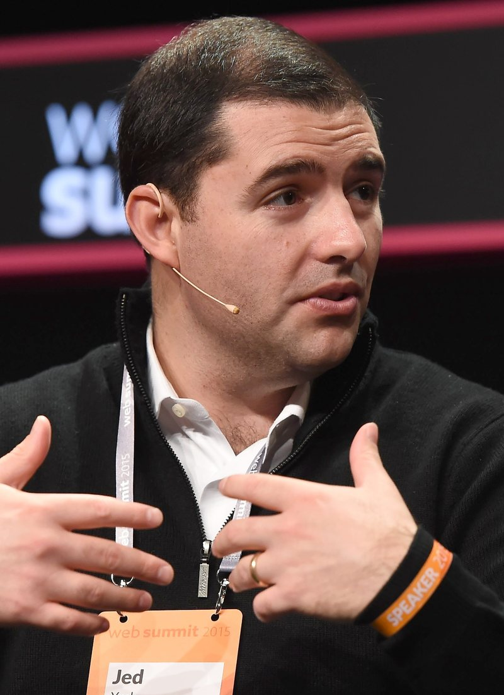

Six Games and Half a Million Dollars. That Is What the NFL Thinks Jed York Owes Us
The league finally handed down its punishment for the Ohio arrest, and it lands almost exactly where you figured it would. Three games already served, three to go, and York is back in the building on October 20.

I was eating lunch at my desk when my phone buzzed with the alert, and I'll be honest, my first reaction wasn't anger. It was relief that it was finally over. Then I read the numbers and the anger showed up about ten seconds later, right on schedule.
Six games. Half a million dollars. That's the bill the NFL handed Jed York on Friday for violating the personal conduct policy, almost six weeks after he got arrested in a prostitution sting in East Palestine, Ohio.
And three of those six games? Already gone. He stayed away from Melbourne, from the Dolphins, from the Cardinals, and the league is counting every one of them. So the part of this suspension that actually happens from today forward is Denver on Sunday, the trip to Seattle, and the Monday night game against Washington. He's eligible to come back on Tuesday, October 20.
That's it. That's the whole thing.
What actually happened, one more time
I already wrote about the arrest back when it broke, and I'm not going to pretend I enjoy going through it again. But here's the short version for anybody who blocked it out, which I wouldn't blame you for.
Sunday, August 23. East Palestine police, working with the Mahoning Valley Human Trafficking Task Force, ran an undercover operation off an online ad. York answered it under a fake name and agreed to pay $140. He got arrested. The next morning he was in front of a judge, the prostitution charge got knocked down to disorderly conduct, and he pleaded no contest to that and to possessing criminal tools. Guilty on both. $1,150 in fines and a day in jail he'd already served.
Then he went quiet, the team went quiet, and the league started its own investigation. Friday was the end of that.

Six and five hundred is the house special
You want to know what bugs me most? It isn't that the punishment is light. It's that it's the exact same punishment Jim Irsay got in 2014. Six games, $500,000. Same number of games, same number on the check. The Texans minority owner, Javier Loya, got $500,000 too last year, plus an indefinite suspension.
So there's a menu. That's what this tells me. Owner gets in trouble with the law, owner gets six games and five hundred grand, everybody nods, press release goes out on a Friday, and we all move on to the injury report. It doesn't matter much what the specifics were. You land on the menu, you pay the menu price.
And for a guy whose family owns an NFL franchise, five hundred thousand dollars isn't a punishment. It's a rounding error. I'd feel the fine. My neighbor would feel the fine. Jed York's going to feel the headlines a lot more than he's going to feel the money, and the league knows that, and it's the money they announced anyway.
Players get suspended for real games. Games they can't get back, checks that actually hurt, careers that get shorter. When the owner gets six, half of which he already sat out on his own, I don't know how you look a 26 year old linebacker in the eye and tell him the policy applies to everybody the same.
He said the right things. I've heard him say the right things before.
York put out a statement Friday saying he accepts the decision in full. He called it an inexcusable mistake and said he takes full responsibility. He apologized to his family, to the players, to the coaches and to the people who work for the 49ers. He said leading this team is a privilege, one he doesn't take lightly, and that our trust will have to be earned back over time.
Fine. Good, even. It's the statement I'd want him to make.
But I've been a Niners fan long enough to remember Jed York at a podium explaining to all of us where the line was. Talking about doing things the right way. Talking about what this organization will and won't tolerate. When you've been the one setting the standard out loud for years, the words "earned back over time" aren't a closing statement. They're a starting point, and he's starting from a hole he dug himself in a small town in Ohio.
My dad texted me after the news broke. One line. "Six games for that?" I didn't have a good answer, so I didn't send one.
The part where I'm grateful for the football people
Here's the weird thing. The football team has been great without him. We're 3 and 0. We beat the Rams by 20 in Australia, beat Miami by 22, and survived Arizona 36 to 30 with half the receiver room in the training room. I wrote about how McCaffrey, Juice and Jordan Watkins are carrying this offense, and none of it had anything to do with who was or wasn't sitting in the owner's suite.
That's a credit to Kyle Shanahan and John Lynch. And it's a credit to Al Guido, who took over the CEO title back in February and has been the one actually running the business side through all of this. I don't think enough people noticed that York had already stepped back from that job before any of the Ohio stuff happened. In hindsight it reads a little different, doesn't it?
So no, I'm not worried about Sunday. Denver's a real test, I laid it all out in my Broncos preview, but that's a football problem and the football people have earned the benefit of the doubt.
What happens October 20
This is the part I actually care about. York's eligible to come back on Tuesday the 20th, which is the day after the Washington game and three weeks before the trade deadline on November 10. If this front office wants to make a move for a receiver, and given the injury list they might have to, the owner's going to be back in the room for it.
His first game back would be in Atlanta on October 25. Then the bye. Then the Raiders come to Levi's on November 8, and that'll be the first time he's in our building since all of this. I'm curious what that afternoon looks like. I'm curious whether he walks down to the field before kickoff, or whether he keeps his head down and lets the football speak for itself.
I know which one I'd pick if I were him.
I've already said what I think about how this whole thing has rattled the people around this franchise in my column on the Yorks and the league, and nothing about Friday changed my mind. If anything it confirmed it. The league picked the easiest number on the board and called it accountability.
We've got a 3 and 0 team, a quarterback playing out of his mind and a coach who keeps finding points with whoever's healthy. That's the 49ers I care about. The other stuff? He's got six games to think about it. Three, really.
More coverage: 49ers · NFL · Bay Area Sports Blog home